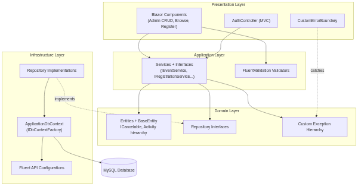
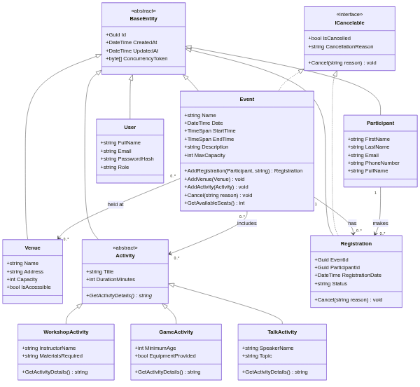
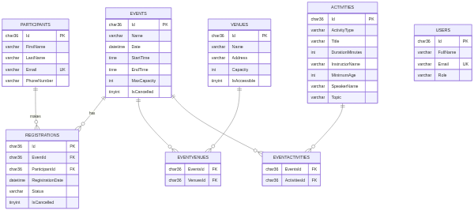
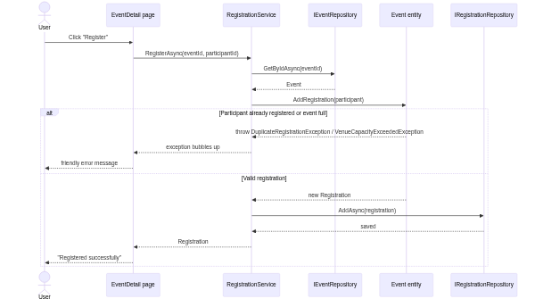

This document supports my submission for CET254 Assignment 1. I have built a Community Event Management System as a web application that lets an organisation manage community events, the venues those events take place at, the activities that make up each event, the participants who attend, and the registrations that link participants to events. There are two roles: an administrator manages all of the data, while a user can sign up for their own account, browse and filter upcoming events, register themselves, and view or cancel their own registrations.
The application is built with .NET 10 using a Blazor Web App (Interactive Server render mode), Entity Framework Core 9 with a MySQL database (via the Pomelo provider), and cookie-based authentication. It is organised into clear layers (Domain, Infrastructure, Application and Presentation) to keep the responsibilities separated.
I deliberately split the project into four layers so each part has one job:
| Layer | Responsibility | Key contents |
|---|---|---|
| Domain | The core model with no outside dependencies | Entities, the ICancelable interface, repository interfaces, custom exceptions |
| Infrastructure | Talking to the database | ApplicationDbContext, Fluent API configurations, the seeder, repository implementations |
| Application | Business logic | Services (with interfaces) and FluentValidation validators |
| Presentation | The user interface and entry points | Blazor components, the MVC AuthController, view models |
The diagram below shows the four layers and how they depend on one another. The arrows point in the direction of the dependency. Notice that the Application layer depends on the repository interfaces in the Domain layer, and the Infrastructure layer implements those interfaces (the dashed arrow). This is the Repository pattern combined with dependency inversion, and it is what lets me swap the real repositories for mocks in my unit tests.

The class diagram below shows the object-oriented design. Every entity inherits from the
abstract BaseEntity. The ICancelable interface is implemented by both
Event and Registration (interface polymorphism), and the abstract
Activity class has three concrete subclasses (inheritance polymorphism). The two
many-to-many relationships and the Registration association class are also shown.

The ERD shows the database tables Entity Framework Core generates. All three activity types are
stored in the single ACTIVITIES table using Table-Per-Hierarchy, with an
ActivityType discriminator column and nullable columns for the subclass fields.
The many-to-many links are resolved by the EVENTVENUES and
EVENTACTIVITIES junction tables, and REGISTRATIONS is the join entity
between events and participants.

The diagrams above show the static structure. This sequence diagram shows the dynamic behaviour
of the most important use case — registering a participant for an event — including
the path where a business rule is broken. When a participant is already registered or the event
is full, the Event entity throws one of my custom exceptions, which travels back up
to the page and is shown to the user as a friendly message rather than crashing.

| Feature | Where it is in my code |
|---|---|
| Inheritance | Every entity inherits from the abstract BaseEntity; WorkshopActivity, GameActivity and TalkActivity inherit from the abstract Activity. |
| Interface polymorphism | ICancelable is implemented by both Event and Registration, each with its own Cancel() behaviour. |
| Inheritance polymorphism | The abstract method GetActivityDetails() is overridden differently by each Activity subclass. |
| Encapsulation | Entities use private List<T> backing fields exposed as IReadOnlyCollection<T>; business rules live inside the entities (for example Event.AddRegistration()). |
| Constructors | Every entity has dual constructors: a public one for my code and a private parameterless one for EF Core. |
| Method overloading | EventService.GetEventsAsync() has three overloads that share a name but take different parameters. |
| Composition & modularisation | The interface is built from small reusable components (Icon, PageHeader, StatusBadge, EmptyState, LoadingButton, StatCard) composed together on each page. |
| Pattern / technique | How I used it |
|---|---|
| Repository pattern | An entity-specific repository behind an interface for each entity, so the services never touch EF Core directly. |
| Factory pattern (DbContext) | IDbContextFactory hands a fresh, short-lived DbContext to every operation, which is the safe approach for Blazor Server. |
| Fluent API configuration | A separate IEntityTypeConfiguration<T> class per entity, instead of data annotations. |
| Table-Per-Hierarchy | The Activity hierarchy is mapped to one table with a discriminator. |
Dynamic IQueryable search | The browse page builds its query from only the filters the user chose, debounced by 400ms so it does not query on every keystroke. |
| Dependency Injection | Every repository, service and validator is registered against its interface in Program.cs. |
| Observer pattern | The ToastService raises an OnChange event that the Toaster component subscribes to, so any page can show a pop-up notification without being coupled to it. |
I use FluentValidation for form validation. The main advantage over data
annotations is cross-property rules — for example, EventValidator checks that
the end time is after the start time, and ActivityValidator uses conditional
When(...) rules so subclass fields are only required for the matching type.
I also built a custom exception hierarchy with EventManagementException as the base
and specific exceptions such as DuplicateRegistrationException and
VenueCapacityExceededException. A CustomErrorBoundary wraps the page
content, logs any error, and shows the user a friendly message instead of a crash.
All 43 automated tests pass. They use xUnit and are deliberately spread across several styles so that every layer is tested in the most appropriate way, covering the happy paths, the edge cases and the boundary conditions.
| Test group | Style | Count | What it covers |
|---|---|---|---|
| Entity rules | Plain xUnit | 8 | Duplicate registration, capacity reached exactly (boundary), re-registering after a cancellation (edge case), available-seat counting, cancellation |
| Polymorphism | Plain xUnit | 4 | GetActivityDetails() dispatched through base-type references to each subclass |
| Validators | FluentValidation TestHelper | 10 | Cross-property end-time rule, conditional per-subclass rules, boundary capacities, invalid email |
| Repositories | SQLite in-memory | 7 | Save with links, unknown id, filter by date/venue/activity-type (TPH discriminator), unique-index, cascade delete |
| Services | Moq | 11 | Register happy path, duplicate, capacity, cancelled event, not-found cases, cancel event, cancel registration |
| Components | bUnit | 3 | Browse list renders cards, detail shows name, register-without-participant shows error |
A representative selection of the individual tests:
| # | Test | Type | Expected result | Status |
|---|---|---|---|---|
| 1 | Add event with venue and activity | Repository (SQLite) | Event saved with its links | Pass |
| 2 | Get event by unknown id | Repository (SQLite) | Returns null | Pass |
| 3 | Filter events by date | Repository (SQLite) | Only matching date returned | Pass |
| 4 | Filter events by venue | Repository (SQLite) | Only matching venue returned | Pass |
| 5 | Duplicate registration unique index | Repository (SQLite) | Database rejects the duplicate | Pass |
| 6 | Register participant (happy path) | Service (Moq) | Registration created and saved once | Pass |
| 7 | Register same participant twice | Service (Moq) | DuplicateRegistrationException | Pass |
| 8 | Register when event is full | Service (Moq) | VenueCapacityExceededException | Pass |
| 9 | Cancel event | Service (Moq) | IsCancelled set with reason | Pass |
| 10 | GetEventsAsync overload | Service (Moq) | Returns all events | Pass |
| 11 | Event list renders cards | Component (bUnit) | One card per event | Pass |
| 12 | Event detail shows name | Component (bUnit) | Event name shown | Pass |
| 13 | Register with no participant chosen | Component (bUnit) | Friendly error, no registration | Pass |
To run the tests: dotnet test — expected output Passed! - Failed: 0, Passed: 43.
[Paste a screenshot of the Visual Studio Test Explorer showing all 43 tests green here.]
CommunityEventManagement/appsettings.json.dotnet run --project CommunityEventManagement. On first run the database is
created, migrated and seeded automatically.The system has two roles, matching the brief. A new visitor can self-register through the sign-up page, which creates both their login and a linked participant profile.
| Role | Demo account | What they can do |
|---|---|---|
| Admin | admin@events.com / Admin123! | Manage events, venues, activities and participants; register any participant for an event. |
| User | user@events.com / User123! | Browse and filter upcoming events, register themselves, and view or cancel their own registrations. |
[Optional: paste screenshots of the running application — login page, admin dashboard, the browse/search page, a user self-registering, and the toast/skeleton/loading states — here.]